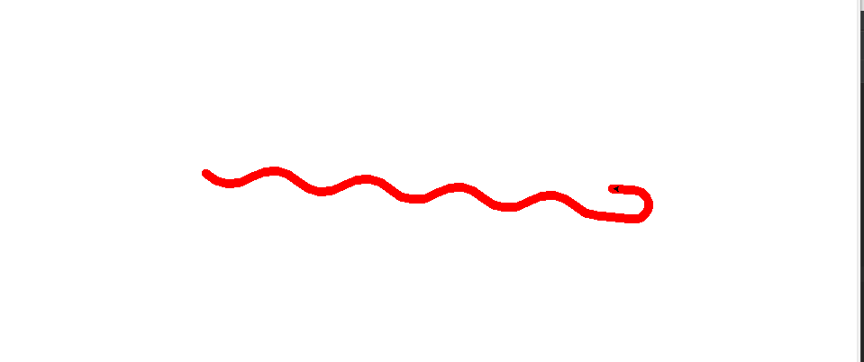
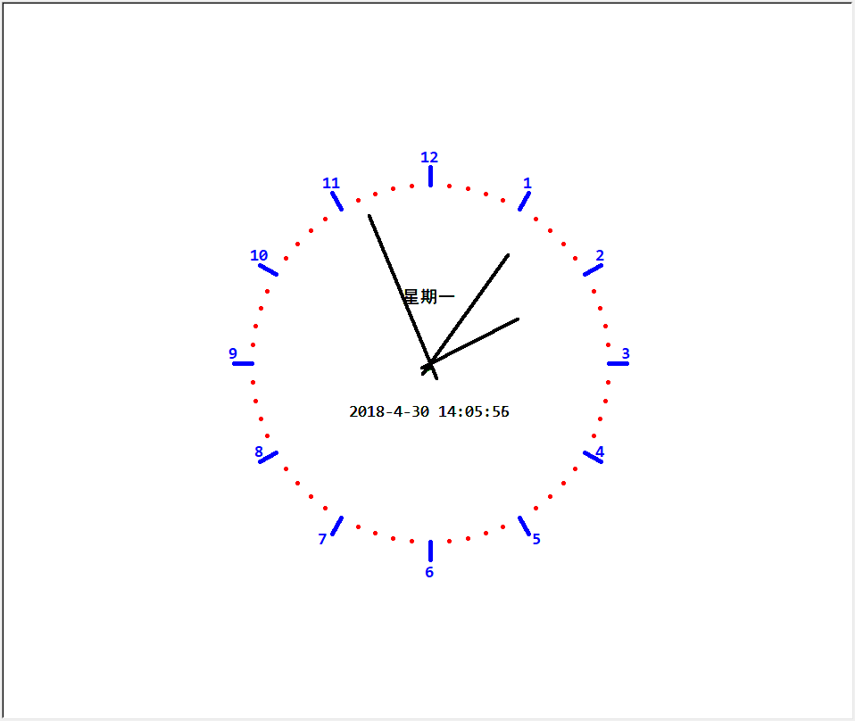

Turtle库是Python内置的图形化模块，属于标准库之一，位于Python安装目录的lib文件夹下，常用函数有以下几种：
penup():抬起画笔；pendown():落下画笔；pensize(width):画笔宽度；pencolor(color):画笔颜色；forward(d)/fd(d):直行d个像素；circle(r, extent = None):绘制半径为r，角度为extent的弧形，圆心默认在海龟左侧距离r的位置；setheading(angle)/seth(angle):改变前进方向；left(angle):海龟左转；right(angle):海龟右转；#coding=utf-8
#绘制蟒蛇
import turtle
turtle.penup()
turtle.pencolor("red")
turtle.forward(-250)
turtle.pendown()
turtle.pensize(10)
turtle.right(45)
for i in range(4):
turtle.circle(40, 80)
turtle.circle(-40, 80)
turtle.circle(40, 80 / 2)
turtle.fd(40)
turtle.circle(16, 180)
turtle.fd(40 * 2 / 3)
turtle.done()
#coding=utf-8
# 绘制五角星
import turtle
turtle.pensize(5)
turtle.pencolor("red")
turtle.forward(200)
for i in range(4):
turtle.right(144)
turtle.fd(200)
turtle.done()#绘制时钟
# coding=utf-8
import turtle as tt
from datetime import *
# 当前日期属于一周的第几天
def Week(t):
week = ["星期一", "星期二", "星期三", "星期四", "星期五", "星期六", "星期日"]
return week[t.weekday()]
# 获取当前时间
def Date(t):
y = t.year
m = t.month
d = t.day
cur_hour = t.hour;
cur_min = t.minute;
cur_sec = t.second;
return "%s-%d-%d %d:%02d:%02d" % (y, m, d, cur_hour, cur_min, cur_sec)
# 移动画笔,距离为distance
def movePen(distance):
tt.penup()
tt.pensize(5)
tt.pencolor("blue")
tt.fd(distance)
tt.pendown()
# 绘制表针
def makeHands(name, length):
# 清空窗口，重置turtule状态为初始状态
tt.reset()
movePen(-length * 0.1)
# 开始记录多边形的顶点
tt.begin_poly()
tt.fd(length * 1.1)
# 停止记录多边形的顶点
tt.end_poly()
# 返回记录的多边形
handForm = tt.get_poly()
tt.register_shape(name, handForm)
# 初始化
def initial():
global secHand, minHand, hurHand, printer
# 重置方向向北(上)，正角度为顺时针
tt.mode("logo")
# 建立并初始化表针
makeHands("secHand", 180)
makeHands("minHand", 150)
makeHands("hurHand", 110)
secHand = tt.Turtle()
secHand.shape("secHand")
minHand = tt.Turtle()
minHand.shape("minHand")
hurHand = tt.Turtle()
hurHand.shape("hurHand")
for hand in secHand, minHand, hurHand:
hand.shapesize(1, 1, 4)
hand.speed(0)
# 输出文字
printer = tt.Turtle()
# 隐藏画笔
printer.hideturtle()
printer.penup()
# 绘制表盘外框
def drawClock(R):
# 清空窗口，重置turtule状态为初始状态
tt.reset()
# 画笔尺寸
tt.pensize(5)
for i in range(60):
movePen(R)
if i % 5 == 0:
tt.fd(20)
movePen(-R - 20)
movePen(R + 20)
if i == 0:
# 写文本
tt.write(int(12), align="center", font=("Consolas", 14, "bold"))
elif i == 30:
movePen(25)
tt.write(int(i / 5), align="center", font=("Consolas", 14, "bold"))
movePen(-25)
elif (i == 25 or i == 35):
movePen(20)
tt.write(int(i / 5), align="center", font=("Consolas", 14, "bold"))
movePen(-20)
else:
tt.write(int(i / 5), align="center", font=("Consolas", 14, "bold"))
movePen(-R - 20)
else:
# 绘制指定半径和颜色的点
tt.dot(5, "red")
movePen(-R)
tt.right(6)
# 表针的动态显示
def handsMove():
t = datetime.today()
second = t.second + t.microsecond * 0.000001
minute = t.minute + second / 60.0
hour = t.hour + minute / 60.0
secHand.seth(6 * second)
minHand.seth(6 * minute)
hurHand.seth(30 * hour)
tt.tracer(False)
printer.fd(65)
tt.pencolor("green")
printer.write(Week(t), align="center", font = ("黑体", 14))
printer.back(130)
printer.write(Date(t), align="center", font = ("Consolas", 14))
# 设置当前画笔位置为原点，方向朝东
printer.home()
tt.tracer(True)
# 经过100ms后继续调用handsMove函数
tt.ontimer(handsMove, 100)
# 调用定义的函数，打开和关闭动画，为更新图纸设置延迟；
tt.tracer(False)
initial()
drawClock(200)
tt.tracer(True)
handsMove()
tt.mainloop()
欢迎关注微信公众号：村雨1943;创作不易，未经同意，转载请注明出处~